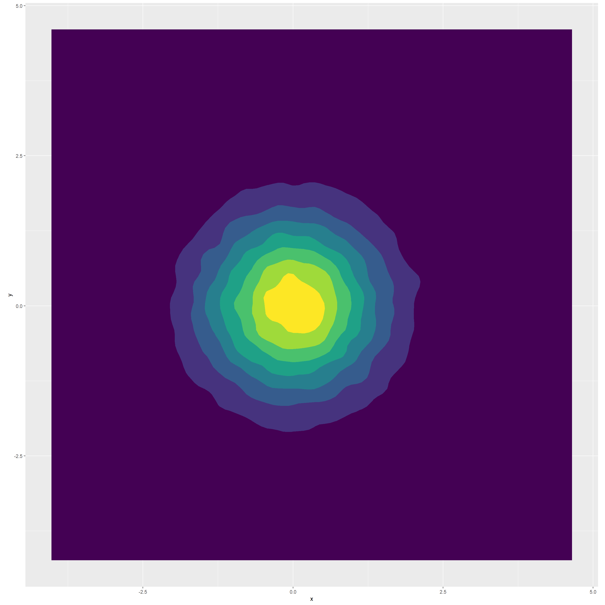
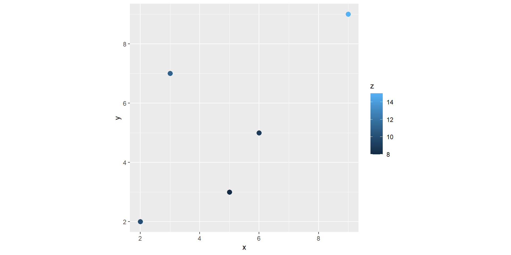
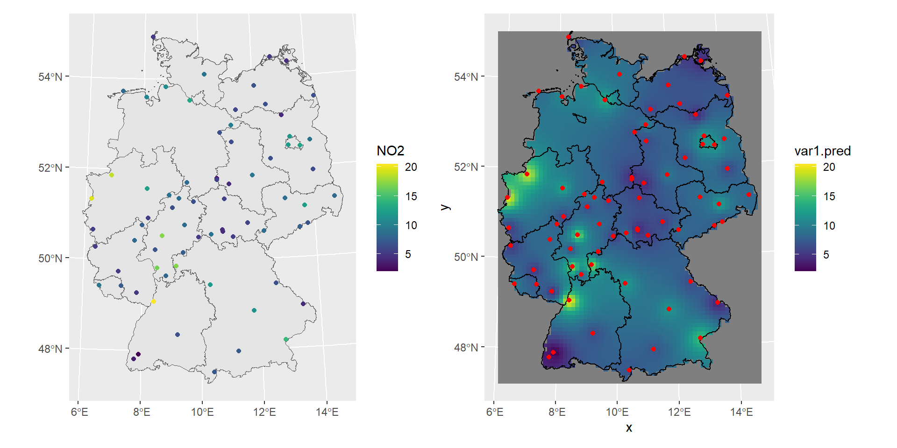

N.latitude W.longitude
Regina 50.25 -104.39
Sherbrooke 45.24 -71.54
Winnipeg 49.53 -97.09
Resolute 74.41 -94.54
Yellowknife 62.27 -114.21
Edmonton 53.33 -113.28
Dawson 64.04 -139.25
Ottawa 45.25 -75.22
Fredericton 45.58 -66.39
Churchill 58.46 -94.10
Whitehorse 60.43 -135.03
Sydney 46.09 -60.11
Scheffervll 54.47 -64.49
Montreal 45.31 -73.34Spatial Data Science
👩🏻💻 Dr Thiyanga S. Talagala @ University of Sri Jayewardenepura
- ttalagala@sjp.ac.lk
- @thiyangt
- github.com/thiyangt
- https://thiyanga.netlify.app/
Outline
Introduction
A spatial stochastic process is a family of random variables \[\{Z(s): s \in D\}.\]
Here,
\(D\) is the spatial domain in which observations could be made and
\(Z(s)\) is a random variable representing the quantity that you measured at location \(s\).
Daily temperature in Canada
Locations of Canadian weather stations: \(s_i\)
Example: \(s_1 = (50.25, -104.39)\)
Daily temperature in Canada
Observed daily temperature value: \(z(s_i)\)
Regina Sherbrooke Winnipeg Resolute Yellowknife Edmonton
-15.7 -10.1 -17.9 -30.7 -24.5 -12.6
Dawson Ottawa Fredericton Churchill Whitehorse Sydney
-28.0 -9.4 -7.9 -24.9 -17.6 -3.8
Scheffervll Montreal
-22.5 -8.7 Example:
\[s_1 = (50.25, -104.39)\] \[z(s_1) = -15.7\]
Visualization
N.latitude W.longitude
Regina 50.25 -104.39
Sherbrooke 45.24 -71.54
Winnipeg 49.53 -97.09
Resolute 74.41 -94.54
Yellowknife 62.27 -114.21
Edmonton 53.33 -113.28
Dawson 64.04 -139.25
Ottawa 45.25 -75.22
Fredericton 45.58 -66.39
Churchill 58.46 -94.10
Whitehorse 60.43 -135.03
Sydney 46.09 -60.11
Scheffervll 54.47 -64.49
Montreal 45.31 -73.34Visualization (cont.)
N.latitude W.longitude location
Regina 50.25 -104.39 Regina
Sherbrooke 45.24 -71.54 Sherbrooke
Winnipeg 49.53 -97.09 Winnipeg
Resolute 74.41 -94.54 Resolute
Yellowknife 62.27 -114.21 Yellowknife
Edmonton 53.33 -113.28 Edmonton
Dawson 64.04 -139.25 Dawson
Ottawa 45.25 -75.22 Ottawa
Fredericton 45.58 -66.39 Fredericton
Churchill 58.46 -94.10 Churchill
Whitehorse 60.43 -135.03 Whitehorse
Sydney 46.09 -60.11 Sydney
Scheffervll 54.47 -64.49 Scheffervll
Montreal 45.31 -73.34 MontrealVisualisation (cont.)
Simple feature collection with 14 features and 1 field
Geometry type: POINT
Dimension: XY
Bounding box: xmin: -139.25 ymin: 45.24 xmax: -60.11 ymax: 74.41
CRS: NA
First 10 features:
location geometry
Regina Regina POINT (-104.39 50.25)
Sherbrooke Sherbrooke POINT (-71.54 45.24)
Winnipeg Winnipeg POINT (-97.09 49.53)
Resolute Resolute POINT (-94.54 74.41)
Yellowknife Yellowknife POINT (-114.21 62.27)
Edmonton Edmonton POINT (-113.28 53.33)
Dawson Dawson POINT (-139.25 64.04)
Ottawa Ottawa POINT (-75.22 45.25)
Fredericton Fredericton POINT (-66.39 45.58)
Churchill Churchill POINT (-94.1 58.46)Visualisation (cont.)
Simple feature collection with 14 features and 1 field
Geometry type: POINT
Dimension: XY
Bounding box: xmin: -139.25 ymin: 45.24 xmax: -60.11 ymax: 74.41
Geodetic CRS: WGS 84
First 10 features:
location geometry
Regina Regina POINT (-104.39 50.25)
Sherbrooke Sherbrooke POINT (-71.54 45.24)
Winnipeg Winnipeg POINT (-97.09 49.53)
Resolute Resolute POINT (-94.54 74.41)
Yellowknife Yellowknife POINT (-114.21 62.27)
Edmonton Edmonton POINT (-113.28 53.33)
Dawson Dawson POINT (-139.25 64.04)
Ottawa Ottawa POINT (-75.22 45.25)
Fredericton Fredericton POINT (-66.39 45.58)
Churchill Churchill POINT (-94.1 58.46)Add temperature data
Simple feature collection with 14 features and 2 fields
Geometry type: POINT
Dimension: XY
Bounding box: xmin: -139.25 ymin: 45.24 xmax: -60.11 ymax: 74.41
Geodetic CRS: WGS 84
First 10 features:
location geometry temp
Regina Regina POINT (-104.39 50.25) -15.7
Sherbrooke Sherbrooke POINT (-71.54 45.24) -10.1
Winnipeg Winnipeg POINT (-97.09 49.53) -17.9
Resolute Resolute POINT (-94.54 74.41) -30.7
Yellowknife Yellowknife POINT (-114.21 62.27) -24.5
Edmonton Edmonton POINT (-113.28 53.33) -12.6
Dawson Dawson POINT (-139.25 64.04) -28.0
Ottawa Ottawa POINT (-75.22 45.25) -9.4
Fredericton Fredericton POINT (-66.39 45.58) -7.9
Churchill Churchill POINT (-94.1 58.46) -24.9Getting map data
Simple feature collection with 13 features and 121 fields
Geometry type: MULTIPOLYGON
Dimension: XY
Bounding box: xmin: -141.0056 ymin: 41.72947 xmax: -52.61661 ymax: 83.11652
Geodetic CRS: WGS 84
First 10 features:
featurecla scalerank adm1_code diss_me iso_3166_2
1237 Admin-1 states provinces lakes 2 CAN-633 633 CA-BC
1240 Admin-1 states provinces lakes 2 CAN-632 632 CA-AB
1241 Admin-1 states provinces lakes 2 CAN-631 631 CA-SK
1243 Admin-1 states provinces lakes 2 CAN-630 630 CA-MB
1245 Admin-1 states provinces lakes 2 CAN-682 682 CA-ON
1250 Admin-1 states provinces lakes 2 CAN-683 683 CA-QC
1254 Admin-1 states provinces lakes 2 CAN-684 684 CA-NB
1615 Admin-1 states provinces lakes 2 CAN-636 636 CA-YT
2173 Admin-1 states provinces lakes 2 CAN-634 634 CA-NU
2174 Admin-1 states provinces lakes 2 CAN-686 686 CA-NL
wikipedia iso_a2 adm0_sr
1237 http://en.wikipedia.org/wiki/British_Columbia CA 3
1240 http://en.wikipedia.org/wiki/Alberta CA 1
1241 http://en.wikipedia.org/wiki/Saskatchewan CA 1
1243 http://en.wikipedia.org/wiki/Manitoba CA 1
1245 http://en.wikipedia.org/wiki/Ontario CA 1
1250 http://en.wikipedia.org/wiki/Quebec CA 6
1254 http://en.wikipedia.org/wiki/New_Brunswick CA 5
1615 http://en.wikipedia.org/wiki/Yukon CA 5
2173 http://en.wikipedia.org/wiki/Nunavut CA 5
2174 http://en.wikipedia.org/wiki/Newfoundland_and_Labrador CA 6
name name_alt
1237 British Columbia Colombie britannique|New Caledonia
1240 Alberta <NA>
1241 Saskatchewan <NA>
1243 Manitoba <NA>
1245 Ontario Upper Canada
1250 Québec Lower Canada
1254 New Brunswick Nouveau-Brunswick|Acadia
1615 Yukon Yukon Territory|Territoire du Yukon|Yukon|Yuk¢n
2173 Nunavut <NA>
2174 Newfoundland and Labrador Newfoundland|Terre-Neuve|Terre-Neuve-et-Labrador
name_local type type_en code_local code_hasc note hasc_maybe
1237 <NA> Province Province <NA> CA.BC <NA> <NA>
1240 <NA> Province Province <NA> CA.AB <NA> <NA>
1241 <NA> Province Province <NA> CA.SK <NA> <NA>
1243 <NA> Province Province <NA> CA.MB <NA> <NA>
1245 <NA> Province Province <NA> CA.ON <NA> <NA>
1250 <NA> Province Province <NA> CA.QC <NA> <NA>
1254 <NA> Province Province <NA> CA.NB <NA> <NA>
1615 <NA> Territoire Territory <NA> CA.YT <NA> <NA>
2173 <NA> Territoire Territory <NA> CA.NU <NA> <NA>
2174 <NA> Province Province <NA> CA.NF <NA> <NA>
region region_cod provnum_ne gadm_level check_me datarank
1237 Western Canada <NA> 2 1 20 2
1240 Western Canada <NA> 12 1 20 2
1241 Western Canada <NA> 13 1 20 2
1243 Western Canada <NA> 11 1 20 2
1245 Eastern Canada <NA> 7 1 20 2
1250 Eastern Canada <NA> 4 1 20 2
1254 Eastern Canada <NA> 10 1 20 2
1615 Northern Canada Northern Canada 8 1 20 2
2173 Northern Canada Northern Canada 1 1 20 2
2174 Eastern Canada <NA> 6 1 20 2
abbrev postal area_sqkm sameascity labelrank name_len mapcolor9 mapcolor13
1237 B.C. BC 0 -99 2 16 2 2
1240 Alta. AB 0 -99 2 7 2 2
1241 Sask. SK 0 -99 2 12 2 2
1243 Man. MB 0 -99 2 8 2 2
1245 Ont. ON 0 -99 2 7 2 2
1250 Que. QC 0 -99 2 6 2 2
1254 N.B. NB 0 -99 2 13 2 2
1615 Yuk. YT 0 -99 2 5 2 2
2173 Nun. NU 0 -99 2 7 2 2
2174 N.L. NL 0 -99 2 25 2 2
fips fips_alt woe_id woe_label
1237 CA02 <NA> 2344916 British Columbia, CA, Canada
1240 CA01 <NA> 2344915 Alberta, CA, Canada
1241 CA11 <NA> 2344925 Saskatchewan, CA, Canada
1243 CA03 <NA> 2344917 Manitoba, CA, Canada
1245 CA08 <NA> 2344922 Ontario, CA, Canada
1250 CA10 <NA> 2344924 Quebec, CA, Canada
1254 CA04 <NA> 2344918 New Brunswick, CA, Canada
1615 CA12 <NA> 2344926 Yukon Territory, CA, Canada
2173 CA14 CA14 20069920 Nunavut, CA, Canada
2174 CA05 <NA> 2344919 Newfoundland and Labrador, CA, Canada
woe_name latitude longitude sov_a3 adm0_a3 adm0_label
1237 British Columbia 54.6943 -124.6620 CAN CAN 2
1240 Alberta 55.2816 -115.0000 CAN CAN 2
1241 Saskatchewan 54.4965 -105.6820 CAN CAN 2
1243 Manitoba 54.8500 -97.3828 CAN CAN 2
1245 Ontario 50.5244 -84.7943 CAN CAN 2
1250 Québec 52.2593 -73.7168 CAN CAN 2
1254 New Brunswick 46.5822 -66.4558 CAN CAN 2
1615 Yukon 63.6088 -135.7000 CAN CAN 2
2173 Nunavut 64.3853 -97.1443 CAN CAN 2
2174 Newfoundland and Labrador 48.6598 -56.2169 CAN CAN 2
admin geonunit gu_a3 gn_id gn_name gns_id
1237 Canada Canada CAN 5909050 British Columbia -561661
1240 Canada Canada CAN 5883102 Alberta -559990
1241 Canada Canada CAN 6141242 Saskatchewan -573211
1243 Canada Canada CAN 6065171 Manitoba -568643
1245 Canada Canada CAN 6093943 Ontario -570663
1250 Canada Canada CAN 6115047 Quebec -571854
1254 Canada Canada CAN 6087430 New Brunswick -570089
1615 Canada Canada CAN 6185811 Yukon -576336
2173 Canada Canada CAN 6091732 Nunavut 448560
2174 Canada Canada CAN 6354959 Newfoundland and Labrador -570103
gns_name gn_level gn_region gn_a1_code
1237 British Columbia, Province of 1 <NA> CA.02
1240 Alberta, Province d' 1 <NA> CA.01
1241 Saskatchewan, Province de 1 <NA> CA.11
1243 Manitoba, Province de 1 <NA> CA.03
1245 Ontario, Province d' 1 <NA> CA.08
1250 Quebec, Province du 1 <NA> CA.10
1254 New Brunswick, Province of 1 <NA> CA.04
1615 Yukon 1 <NA> CA.12
2173 Nunavut 1 <NA> CA.14
2174 Newfoundland and Labrador, Province of 1 <NA> CA.05
region_sub sub_code gns_level gns_lang gns_adm1 gns_region min_label
1237 British Columbia <NA> 1 eng CA02 <NA> 3.5
1240 Prairies <NA> 1 fra CA01 <NA> 3.5
1241 Prairies <NA> 1 fra CA11 <NA> 3.5
1243 Prairies <NA> 1 fra CA03 <NA> 3.5
1245 Ontario <NA> 1 fra CA08 <NA> 3.5
1250 Québec <NA> 1 fra CA10 <NA> 3.5
1254 Atlantic Canada <NA> 1 eng CA04 <NA> 3.5
1615 <NA> <NA> 1 por CA12 <NA> 3.5
2173 <NA> <NA> 1 iku CA14 <NA> 3.5
2174 Atlantic Canada <NA> 1 eng CA05 <NA> 3.5
max_label min_zoom wikidataid name_ar name_bn
1237 7.5 2 Q1974 كولومبيا البريطانية ব্রিটিশ কলাম্বিয়া
1240 7.5 2 Q1951 ألبرتا অ্যালবার্টা
1241 7.5 2 Q1989 ساسكاتشوان সাসক্যাচুয়ান
1243 7.5 2 Q1948 مانيتوبا ম্যানিটোবা
1245 7.5 2 Q1904 أونتاريو অন্টারিও
1250 7.5 2 Q176 كيبك কেবেক
1254 7.5 2 Q1965 نيو برونزويك নিউ ব্রান্সউইক
1615 7.5 2 Q2009 يوكون ইউকন
2173 7.5 2 Q2023 نونافوت নুনাভুট
2174 7.5 2 Q2003 نيوفندلاند ولابرادور নিউফাউন্ডল্যান্ড ও লাব্রাডর
name_de name_en name_es
1237 British Columbia British Columbia Columbia Británica
1240 Alberta Alberta Alberta
1241 Saskatchewan Saskatchewan Saskatchewan
1243 Manitoba Manitoba Manitoba
1245 Ontario Ontario Ontario
1250 Québec Quebec Quebec
1254 New Brunswick New Brunswick Nuevo Brunswick
1615 Yukon Yukon Yukón
2173 Nunavut Nunavut Nunavut
2174 Neufundland und Labrador Newfoundland and Labrador Terranova y Labrador
name_fr name_el name_hi
1237 Colombie-Britannique Βρετανική Κολομβία ब्रिटिश कोलम्बिया
1240 Alberta Αλμπέρτα अल्बर्टा
1241 Saskatchewan Σασκάτσουαν सैस्कैचेवेन
1243 Manitoba Μανιτόμπα मानिटोबा
1245 Ontario Οντάριο ओण्टारियो
1250 Québec Κεμπέκ क्यूबेक
1254 Nouveau-Brunswick Νιου Μπράνσγουικ न्यू ब्रंसविक
1615 Yukon Γιούκον युकॉन प्रांत
2173 Nunavut Νούναβουτ नुनावुत
2174 Terre-Neuve-et-Labrador Νέα Γη και Λαμπραντόρ न्यूफाउंडलैंड और लैब्राडोर
name_hu name_id name_it
1237 Brit Columbia British Columbia Columbia Britannica
1240 Alberta Alberta Alberta
1241 Saskatchewan Saskatchewan Saskatchewan
1243 Manitoba Manitoba Manitoba
1245 Ontario Ontario Ontario
1250 Québec Quebec Québec
1254 Új-Brunswick New Brunswick Nuovo Brunswick
1615 Yukon Yukon Yukon
2173 Nunavut Nunavut Nunavut
2174 Új-Fundland és Labrador Newfoundland dan Labrador Terranova e Labrador
name_ja name_ko
1237 ブリティッシュコロンビア州 브리티시컬럼비아
1240 アルバータ州 앨버타
1241 サスカチュワン州 서스캐처원
1243 マニトバ州 매니토바
1245 オンタリオ州 온타리오
1250 ケベック州 퀘벡
1254 ニュー・ブランズウィック州 뉴브런즈윅
1615 ユーコン準州 유콘 준
2173 ヌナブト準州 누나부트 준
2174 ニューファンドランド・ラブラドール州 뉴펀들랜드래브라도
name_nl name_pl name_pt
1237 Brits-Columbia Kolumbia Brytyjska Colúmbia Britânica
1240 Alberta Alberta Alberta
1241 Saskatchewan Saskatchewan Saskatchewan
1243 Manitoba Manitoba Manitoba
1245 Ontario Ontario Ontário
1250 Quebec Quebec Quebeque
1254 New Brunswick Nowy Brunszwik Novo Brunswick
1615 Yukon Jukon Yukon
2173 Nunavut Nunavut Nunavut
2174 Newfoundland en Labrador Nowa Fundlandia i Labrador Terra Nova e Labrador
name_ru name_sv name_tr
1237 Британская Колумбия British Columbia Britanya Kolumbiyası
1240 Альберта Alberta Alberta
1241 Саскачеван Saskatchewan Saskatchewan
1243 Манитоба Manitoba Manitoba
1245 Онтарио Ontario Ontario
1250 Квебек Québec Québec
1254 Нью-Брансуик New Brunswick New Brunswick
1615 Юкон Yukon Yukon
2173 Нунавут Nunavut Nunavut
2174 Ньюфаундленд и Лабрадор Newfoundland och Labrador Newfoundland ve Labrador
name_vi name_zh ne_id name_he
1237 British Columbia 不列颠哥伦比亚 1159307717 קולומביה הבריטית
1240 Alberta 阿尔伯塔省 1159308775 אלברטה
1241 Saskatchewan 萨斯喀彻温 1159308773 ססקצ'ואן
1243 Manitoba 曼尼托巴 1159308777 מניטובה
1245 Ontario 安大略省 1159309687 אונטריו
1250 Québec 魁北克 1159308703 קוויבק
1254 New Brunswick 新不伦瑞克 1159308785 ניו ברנזוויק
1615 Yukon 育空 1159309667 יוקון
2173 Nunavut 努纳武特 1159307715 נונאווט
2174 Newfoundland và Labrador 纽芬兰-拉布拉多 1159308713 ניופאונדלנד ולברדור
name_uk name_ur name_fa
1237 Британська Колумбія برٹش کولمبیا بریتیش کلمبیا
1240 Альберта البرٹا آلبرتا
1241 Саскачеван ساسکچیوان سسکچوان
1243 Манітоба مانیٹوبا مانیتوبا
1245 Онтаріо انٹاریو انتاریو
1250 Квебек کیوبیک استان کبک
1254 Нью-Брансвік نیو برنزویک نیوبرانزویک
1615 Юкон يوكون یوکان
2173 Нунавут نناوت نوناووت
2174 Ньюфаундленд і Лабрадор نیو فاؤنڈ لینڈ اور لیبراڈور نیوفاندلند و لابرادور
name_zht FCLASS_ISO FCLASS_US FCLASS_FR FCLASS_RU FCLASS_ES
1237 不列顛哥倫比亞省 <NA> <NA> <NA> <NA> <NA>
1240 亞伯達省 <NA> <NA> <NA> <NA> <NA>
1241 薩斯喀徹溫 <NA> <NA> <NA> <NA> <NA>
1243 曼尼托巴省 <NA> <NA> <NA> <NA> <NA>
1245 安大略省 <NA> <NA> <NA> <NA> <NA>
1250 魁北克 <NA> <NA> <NA> <NA> <NA>
1254 新不倫瑞克 <NA> <NA> <NA> <NA> <NA>
1615 育空 <NA> <NA> <NA> <NA> <NA>
2173 努納福特 <NA> <NA> <NA> <NA> <NA>
2174 紐芬蘭-拉布拉多 <NA> <NA> <NA> <NA> <NA>
FCLASS_CN FCLASS_TW FCLASS_IN FCLASS_NP FCLASS_PK FCLASS_DE FCLASS_GB
1237 <NA> <NA> <NA> <NA> <NA> <NA> <NA>
1240 <NA> <NA> <NA> <NA> <NA> <NA> <NA>
1241 <NA> <NA> <NA> <NA> <NA> <NA> <NA>
1243 <NA> <NA> <NA> <NA> <NA> <NA> <NA>
1245 <NA> <NA> <NA> <NA> <NA> <NA> <NA>
1250 <NA> <NA> <NA> <NA> <NA> <NA> <NA>
1254 <NA> <NA> <NA> <NA> <NA> <NA> <NA>
1615 <NA> <NA> <NA> <NA> <NA> <NA> <NA>
2173 <NA> <NA> <NA> <NA> <NA> <NA> <NA>
2174 <NA> <NA> <NA> <NA> <NA> <NA> <NA>
FCLASS_BR FCLASS_IL FCLASS_PS FCLASS_SA FCLASS_EG FCLASS_MA FCLASS_PT
1237 <NA> <NA> <NA> <NA> <NA> <NA> <NA>
1240 <NA> <NA> <NA> <NA> <NA> <NA> <NA>
1241 <NA> <NA> <NA> <NA> <NA> <NA> <NA>
1243 <NA> <NA> <NA> <NA> <NA> <NA> <NA>
1245 <NA> <NA> <NA> <NA> <NA> <NA> <NA>
1250 <NA> <NA> <NA> <NA> <NA> <NA> <NA>
1254 <NA> <NA> <NA> <NA> <NA> <NA> <NA>
1615 <NA> <NA> <NA> <NA> <NA> <NA> <NA>
2173 <NA> <NA> <NA> <NA> <NA> <NA> <NA>
2174 <NA> <NA> <NA> <NA> <NA> <NA> <NA>
FCLASS_AR FCLASS_JP FCLASS_KO FCLASS_VN FCLASS_TR FCLASS_ID FCLASS_PL
1237 <NA> <NA> <NA> <NA> <NA> <NA> <NA>
1240 <NA> <NA> <NA> <NA> <NA> <NA> <NA>
1241 <NA> <NA> <NA> <NA> <NA> <NA> <NA>
1243 <NA> <NA> <NA> <NA> <NA> <NA> <NA>
1245 <NA> <NA> <NA> <NA> <NA> <NA> <NA>
1250 <NA> <NA> <NA> <NA> <NA> <NA> <NA>
1254 <NA> <NA> <NA> <NA> <NA> <NA> <NA>
1615 <NA> <NA> <NA> <NA> <NA> <NA> <NA>
2173 <NA> <NA> <NA> <NA> <NA> <NA> <NA>
2174 <NA> <NA> <NA> <NA> <NA> <NA> <NA>
FCLASS_GR FCLASS_IT FCLASS_NL FCLASS_SE FCLASS_BD FCLASS_UA FCLASS_TLC
1237 <NA> <NA> <NA> <NA> <NA> <NA> <NA>
1240 <NA> <NA> <NA> <NA> <NA> <NA> <NA>
1241 <NA> <NA> <NA> <NA> <NA> <NA> <NA>
1243 <NA> <NA> <NA> <NA> <NA> <NA> <NA>
1245 <NA> <NA> <NA> <NA> <NA> <NA> <NA>
1250 <NA> <NA> <NA> <NA> <NA> <NA> <NA>
1254 <NA> <NA> <NA> <NA> <NA> <NA> <NA>
1615 <NA> <NA> <NA> <NA> <NA> <NA> <NA>
2173 <NA> <NA> <NA> <NA> <NA> <NA> <NA>
2174 <NA> <NA> <NA> <NA> <NA> <NA> <NA>
geometry
1237 MULTIPOLYGON (((-117.0382 4...
1240 MULTIPOLYGON (((-109.9993 4...
1241 MULTIPOLYGON (((-104.0476 4...
1243 MULTIPOLYGON (((-97.22609 4...
1245 MULTIPOLYGON (((-89.58175 4...
1250 MULTIPOLYGON (((-73.35134 4...
1254 MULTIPOLYGON (((-67.17601 4...
1615 MULTIPOLYGON (((-139.0602 6...
2173 MULTIPOLYGON (((-102.5728 6...
2174 MULTIPOLYGON (((-64.53141 6...Visualisation of the spatial domain \(D\)
This represents \(D\) - spatial domain (geographical region which the observations could be made)
A spatial stochastic process is a family of random variables \[\{Z(s): s \in D\}.\]
Visualisation of the spatial domain (\(D\)), and \(z(s_i)\) values
Three types of spatial processes
Geostatistical processes:
In theory the process could be observed at infinitely many locations in \(S \in D\).
Example: Air temperature in Sri Lanka
Areal process
Here \(D\) is divided into on-overlapping sub regions such as \(D = {B_1, B_2,...B_n}\) where \(B_i\) is the \(i^{th}\) sub region.
Example: Total number of dengue cases in each district in Sri Lanka
Point process
The process can be observed only at specific locations in \(S \in D\).
Example: Tree volume of sandalwood trees in Sri Lanka
Tobler’s First Law of Geography
Everything is related to everything else, but near things are more related than distant things.
Weakly Stationary
Strictly Stationary
Isotropy
direction-independent

Anisotropic
direction-independent

What is isotropic?
The correlation between any two observations depends only on the distance between those locations and not on their relative direction (directionally invariant).
Why is isotropic important in spatial data analysis?
This assumption simplifies analysis and modeling processes.
Spatial Interpolation
Spatial interpolation is the activity of estimating values of spatially continuous variables (fields) for spatial locations where they have not been observed, based on observations.
Spatial Interpolation Methods
Inverse Distance Weighting (IDW): It estimates values for unmeasured locations by considering the values and distances of nearby measured points.
Kriging: A geostatistical technique that provides optimal predictions and quantifies uncertainty by analyzing spatial autocorrelation.
Spline Interpolation: It fits a smooth curve through measured points to estimate values at unmeasured locations.
Nearest-neighbor interpolation: It assigns the value of the closest measured point to the unmeasured location.
Statial Interpolation Methods (cont.)
Natural Neighbor: Similar to nearest neighbor but considers multiple nearby points and their influence.
Radial Basis Function (RBF): It constructs a continuous function that satisfies given data values and radial symmetry properties.
Deep Learning Model for Spatial Interpolation
Image-driven spatial interpolation
Bayesian deep learning approaches
Ensemble approaches
Inverse Distance Weighting (IDW)
Nonparametric interpolation method
Based on weighted averages of the observations.
Weights are calculated based on the inverse of the distances between the known data points and the location where the estimation is being made
Relies on Tobler’s first law of geography
Inverse Distance Weighting (IDW)
Suppose \(s_0\) is the point that we need to interpolate. Then,
\[\hat{Z}(s_0) = \frac{\sum_{i=1}^{n}w(s_i)Z(s_i)}{\sum_{i=1}^nw(s_i)}\] and \(w_i\) is defined as
\[w_i = \frac{1}{||s_i - s_o||^p}\]
We can tune the value of \(p\) using a cross validation method
We can limit the amount of neighbours to take into consideration to speed up the computations.
Your turn
| x | y | z |
|---|---|---|
| 2 | 2 | 10 |
| 3 | 7 | 11 |
| 9 | 9 | 15 |
| 6 | 5 | 9 |
| 5 | 3 | 8 |

We want to find z value at x=5, y=5.
Answer
| x | y | z | dis_to_55 | inv_dis | weight |
|---|---|---|---|---|---|
| 2 | 2 | 10 | 4.242641 | 0.2357023 | 0.1040154 |
| 3 | 7 | 11 | 2.828427 | 0.3535534 | 0.1560231 |
| 9 | 9 | 15 | 5.656854 | 0.1767767 | 0.0780115 |
| 6 | 5 | 9 | 1.000000 | 1.0000000 | 0.4413000 |
| 5 | 3 | 8 | 2.000000 | 0.5000000 | 0.2206500 |
Predicted value at (5, 5)
\(z(5, 5) = 10\times 0.104 + 11 \times 0.156 + 15 \times 0.078 + \\ 9 \times 0.441 + 8 \times 0.220\)
IDW - Application
Question: Interpolate Mean \(NO_2\) concentrations in air in Germany, in 2017
Step 1: Load necessary packages
Step 2: Read data
# A tibble: 74 × 21
station_european_code station_local_code country_iso_code country_name
<chr> <chr> <chr> <chr>
1 DENI063 DENI063 DE Germany
2 DEBY109 DEBY109 DE Germany
3 DEBE056 DEBE056 DE Germany
4 DEBE062 DEBE062 DE Germany
5 DEBE032 DEBE032 DE Germany
6 DEHE046 DEHE046 DE Germany
7 DEBY122 DEBY122 DE Germany
8 DESL019 DESL019 DE Germany
9 DENW081 DENW081 DE Germany
10 DESH008 DESH008 DE Germany
# ℹ 64 more rows
# ℹ 17 more variables: station_name <chr>, station_start_date <date>,
# station_end_date <lgl>, type_of_station <chr>,
# station_ozone_classification <chr>, station_type_of_area <chr>,
# station_subcat_rural_back <chr>, street_type <chr>,
# station_longitude_deg <dbl>, station_latitude_deg <dbl>,
# station_altitude <dbl>, station_city <chr>, lau_level1_code <dbl>, … station_european_code station_local_code country_iso_code country_name
1 DENI063 DENI063 DE Germany
2 DEBY109 DEBY109 DE Germany
3 DEBE056 DEBE056 DE Germany
station_name station_start_date station_end_date type_of_station
1 Altes Land 1999-02-11 NA Background
2 Andechs/Rothenfeld 2003-04-17 NA Background
3 B Friedrichshagen 1994-02-01 NA Background
station_ozone_classification station_type_of_area station_subcat_rural_back
1 rural rural unknown
2 rural rural regional
3 rural rural near city
street_type station_longitude_deg station_latitude_deg station_altitude
1 <NA> 9.685031 53.52418 3
2 <NA> 11.220172 47.96875 700
3 <NA> 13.647050 52.44770 35
station_city lau_level1_code lau_level2_code lau_level2_name EMEP_station
1 <NA> NA 3359028 Jork no
2 <NA> NA 9188117 Andechs no
3 <NA> NA 11000000 Berlin, Stadt no
NO2
1 13.102806
2 7.135128
3 12.799011Create a Coordinate Reference System (CRS) Object
st_crs: used to create a coordinate reference system (CRS) object.
EPSG:32632is a specific CRS identifier. In this case, it refers to a CRS known as “WGS 84 / UTM zone 32N”. This CRS is commonly used for mapping and spatial analysis in Europe, particularly in the northern regions.The following line of code creates a CRS object named crs representing the coordinate reference system “WGS 84 / UTM zone 32N”.
Coordinate Reference System:
User input: EPSG:32632
wkt:
PROJCRS["WGS 84 / UTM zone 32N",
BASEGEOGCRS["WGS 84",
ENSEMBLE["World Geodetic System 1984 ensemble",
MEMBER["World Geodetic System 1984 (Transit)"],
MEMBER["World Geodetic System 1984 (G730)"],
MEMBER["World Geodetic System 1984 (G873)"],
MEMBER["World Geodetic System 1984 (G1150)"],
MEMBER["World Geodetic System 1984 (G1674)"],
MEMBER["World Geodetic System 1984 (G1762)"],
MEMBER["World Geodetic System 1984 (G2139)"],
ELLIPSOID["WGS 84",6378137,298.257223563,
LENGTHUNIT["metre",1]],
ENSEMBLEACCURACY[2.0]],
PRIMEM["Greenwich",0,
ANGLEUNIT["degree",0.0174532925199433]],
ID["EPSG",4326]],
CONVERSION["UTM zone 32N",
METHOD["Transverse Mercator",
ID["EPSG",9807]],
PARAMETER["Latitude of natural origin",0,
ANGLEUNIT["degree",0.0174532925199433],
ID["EPSG",8801]],
PARAMETER["Longitude of natural origin",9,
ANGLEUNIT["degree",0.0174532925199433],
ID["EPSG",8802]],
PARAMETER["Scale factor at natural origin",0.9996,
SCALEUNIT["unity",1],
ID["EPSG",8805]],
PARAMETER["False easting",500000,
LENGTHUNIT["metre",1],
ID["EPSG",8806]],
PARAMETER["False northing",0,
LENGTHUNIT["metre",1],
ID["EPSG",8807]]],
CS[Cartesian,2],
AXIS["(E)",east,
ORDER[1],
LENGTHUNIT["metre",1]],
AXIS["(N)",north,
ORDER[2],
LENGTHUNIT["metre",1]],
USAGE[
SCOPE["Navigation and medium accuracy spatial referencing."],
AREA["Between 6°E and 12°E, northern hemisphere between equator and 84°N, onshore and offshore. Algeria. Austria. Cameroon. Denmark. Equatorial Guinea. France. Gabon. Germany. Italy. Libya. Liechtenstein. Monaco. Netherlands. Niger. Nigeria. Norway. Sao Tome and Principe. Svalbard. Sweden. Switzerland. Tunisia. Vatican City State."],
BBOX[0,6,84,12]],
ID["EPSG",32632]]convert no2 to spatial object
no2.sf <- st_as_sf(no2, crs = "OGC:CRS84", coords =
c("station_longitude_deg", "station_latitude_deg")) |>
st_transform(crs)
no2.sfSimple feature collection with 74 features and 19 fields
Geometry type: POINT
Dimension: XY
Bounding box: xmin: 304638.2 ymin: 5263687 xmax: 900829.7 ymax: 6086661
Projected CRS: WGS 84 / UTM zone 32N
# A tibble: 74 × 20
station_european_code station_local_code country_iso_code country_name
* <chr> <chr> <chr> <chr>
1 DENI063 DENI063 DE Germany
2 DEBY109 DEBY109 DE Germany
3 DEBE056 DEBE056 DE Germany
4 DEBE062 DEBE062 DE Germany
5 DEBE032 DEBE032 DE Germany
6 DEHE046 DEHE046 DE Germany
7 DEBY122 DEBY122 DE Germany
8 DESL019 DESL019 DE Germany
9 DENW081 DENW081 DE Germany
10 DESH008 DESH008 DE Germany
# ℹ 64 more rows
# ℹ 16 more variables: station_name <chr>, station_start_date <date>,
# station_end_date <lgl>, type_of_station <chr>,
# station_ozone_classification <chr>, station_type_of_area <chr>,
# station_subcat_rural_back <chr>, street_type <chr>, station_altitude <dbl>,
# station_city <chr>, lau_level1_code <dbl>, lau_level2_code <dbl>,
# lau_level2_name <chr>, EMEP_station <chr>, NO2 <dbl>, …EPSG: 32632 vs OGC: CRS84
EPSG:32632
Commonly used for regional mapping and spatial analysis in Europe, particularly in the northern regions.
OGC:CRS84
Often used in web mapping applications and geospatial data exchange due to its simplicity and widespread support.
EPSG:32632 is a regional projected CRS optimized for mapping specific areas with minimal distortion, while OGC:CRS84 is a global geographic CRS commonly used for general-purpose mapping and data exchange.
Load country boundary
Simple feature collection with 16 features and 16 fields
Geometry type: MULTIPOLYGON
Dimension: XY
Bounding box: xmin: 280741.3 ymin: 5235822 xmax: 921330.5 ymax: 6101239
Projected CRS: WGS 84 / UTM zone 32N
# A tibble: 16 × 17
ID_0 ISO NAME_0 ID_1 NAME_1 VARNAME_1 NL_NAME_1 HASC_1 CC_1 TYPE_1
* <int> <chr> <chr> <int> <chr> <chr> <chr> <chr> <chr> <chr>
1 60 DEU Germany 753 Baden-Wurt… <NA> <NA> DE.BW <NA> Land
2 60 DEU Germany 754 Bayern Bavaria <NA> DE.BY <NA> Land
3 60 DEU Germany 755 Berlin <NA> <NA> DE.BE <NA> Land
4 60 DEU Germany 756 Brandenburg <NA> <NA> DE.BR <NA> Land
5 60 DEU Germany 757 Bremen <NA> <NA> DE.HB <NA> Land
6 60 DEU Germany 758 Hamburg <NA> <NA> DE.HH <NA> Land
7 60 DEU Germany 759 Hessen Hesse <NA> DE.HE <NA> Land
8 60 DEU Germany 760 Mecklenbur… Mecklenb… <NA> DE.MV <NA> Land
9 60 DEU Germany 761 Niedersach… Lower Sa… <NA> DE.NI <NA> Land
10 60 DEU Germany 762 Nordrhein-… North Rh… <NA> DE.NW <NA> Land
11 60 DEU Germany 763 Rheinland-… Rhinelan… <NA> DE.RP <NA> Land
12 60 DEU Germany 764 Saarland <NA> <NA> DE.SL <NA> Land
13 60 DEU Germany 765 Sachsen Saxony <NA> DE.SN <NA> Land
14 60 DEU Germany 766 Sachsen-An… Saxony-A… <NA> DE.ST <NA> Land
15 60 DEU Germany 767 Schleswig-… <NA> <NA> DE.SH <NA> Land
16 60 DEU Germany 768 Thuringen Thuringia <NA> DE.TH <NA> Land
# ℹ 7 more variables: ENGTYPE_1 <chr>, VALIDFR_1 <chr>, VALIDTO_1 <chr>,
# REMARKS_1 <chr>, Shape_Leng <dbl>, Shape_Area <dbl>,
# geom <MULTIPOLYGON [m]>Data source: https://github.com/edzer/sdsr/tree/main/data (select de_nuts1.gpkg)
Plot map
Add observed values to the map
IDW
Step 1: Create a regular grid (\(10km \times 10km\))
stars object with 2 dimensions and 1 attribute
attribute(s):
Min. 1st Qu. Median Mean 3rd Qu. Max. NA's
values 0 0 0 0 0 0 2076
dimension(s):
from to offset delta refsys x/y
x 1 65 280741 10000 WGS 84 / UTM zone 32N [x]
y 1 87 6101239 -10000 WGS 84 / UTM zone 32N [y]st_bbox(map): Calculate the bounding box of the spatial objectmap.
st_as_stars(dx = 10000): Convert the bounding box obtained fromst_bbox(map)into a raster object using the stars package. Thedxparameter sets the cell size (in the x-direction) for the resulting raster, with a value of 10000 specified here.st_crop(map):This function crops the raster grid obtained from st_as_stars(dx = 10000) to match the extent of the map object. This ensures that the resulting grid covers only the area within the spatial extent of the map object.
IDW
Step 2: Interpolation
[inverse distance weighted interpolation]stars object with 2 dimensions and 2 attributes
attribute(s):
Min. 1st Qu. Median Mean 3rd Qu. Max. NA's
var1.pred 2.168083 7.397774 8.323239 8.571584 9.422718 20.47053 2076
var1.var NA NA NA NaN NA NA 5655
dimension(s):
from to offset delta refsys x/y
x 1 65 280741 10000 WGS 84 / UTM zone 32N [x]
y 1 87 6101239 -10000 WGS 84 / UTM zone 32N [y]IDW
Step 3: Plot values
Comparison
library(patchwork)
p1 <- ggplot() + geom_sf(data = map) + geom_sf(data = no2.sf, mapping = aes(col = NO2)) + scale_color_viridis()
p2 <- ggplot() + geom_stars(data = interpolated.values,
aes(fill = var1.pred, x = x, y = y)) + geom_sf(data = st_cast(map, "MULTILINESTRING")) + geom_sf(data = no2.sf, col="red") + scale_fill_viridis()
p1|p2